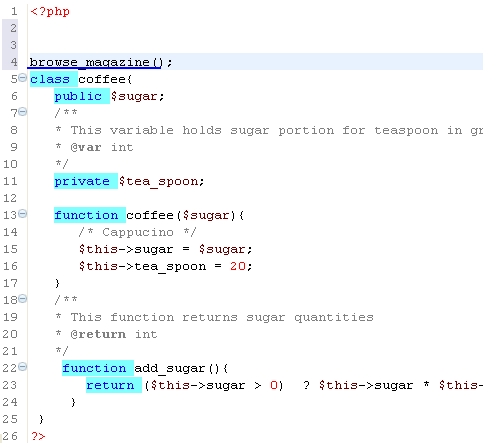
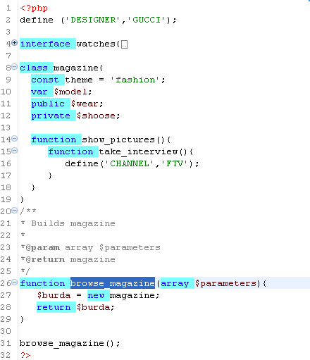

The PHP "GoTo" feature opens the Editor to the initial declaration of the PHP element (when the element in not part of the PHP language model).
Open a file (file_1) that uses a PHP element [ function come_to_me() { } ] that is declared in a different file (file_2).
Click the PHP element (e.g., browse_magazine(); ) in file_1. Press the Ctrl button and move the cursor down towards the bottom of the element until an underline appears under it (the PHP element).

Figure: Contains User-Defined PHP Function
Left click the mouse. File_2 (containing the initial declaration) will open.

Figure: "GoTo" Opens File Containing Initial Declaration of User-Defined PHP Function